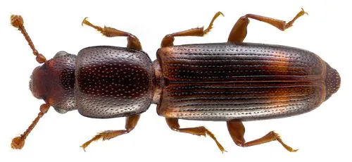

真菌 · 真菌界
根内球囊霉 Rhizophagus intraradices

根内球囊霉是丛枝菌根真菌，菌丝在植物根内形成丛枝结构，帮助作物吸收磷和水分，被广泛制成微生物菌肥使用。
- 分类
- 门球囊菌门纲球囊菌纲目球囊菌目科球囊菌科属根内球囊霉属
- 栖息环境
- 农田、草地与森林土壤，与大多数植物的根系共生
- 地理分布
- 世界性分布，各类土壤与农田中普遍存在
- 保护级别
- 暂无评估（IUCN 未评估，农业有益微生物）
物种志
根内球囊霉是球囊菌门球囊菌科的真菌，过去归入球囊霉属，旧学名为 Glomus intraradices。它不能脱离植物独立生活，必须与植物根系共生：孢子萌发后菌丝侵入根皮层细胞，在细胞内形成树枝状的丛枝和泡囊结构；同时在根外形成发达的菌丝网，向土壤中延伸。孢子球形至近球形，直径约 50–150 μm，生于根外菌丝上。
根内球囊霉是世界分布最广的丛枝菌根真菌之一，能与粮食作物、蔬菜、果树和牧草等大多数植物共生。它帮助植物吸收磷、锌等矿质元素和水分，提高抗旱性和抗病能力，同时从植物获取糖分，是土壤生态系统中的重要成员。农业生产中，它被制成菌剂用于育苗和移栽，可以减少磷肥用量、改善土壤结构；菌剂通常需要用宿主植物扩繁，不能像蘑菇那样用培养基单独培养。
形态与习性
- 分类球囊菌门，丛枝菌根真菌
- 孢子球形，直径约 50–150 μm
- 共生结构根内形成丛枝和泡囊
- 作用帮助植物吸收磷、锌和水分
- 应用制成菌肥用于育苗和移栽
- 扩繁需宿主植物扩繁，不能单独培养
- 分布世界性分布，农田与草地常见
趣味知识
- 根内球囊霉必须在植物根里才能生活，不能单独培养。
- 它的菌丝在根细胞内形成树枝状的“丛枝”，因此得名丛枝菌根。
- 接种这种菌可以帮作物多吸收磷，减少化肥用量。
- 它的孢子很小，直径只有几十到一百多微米。